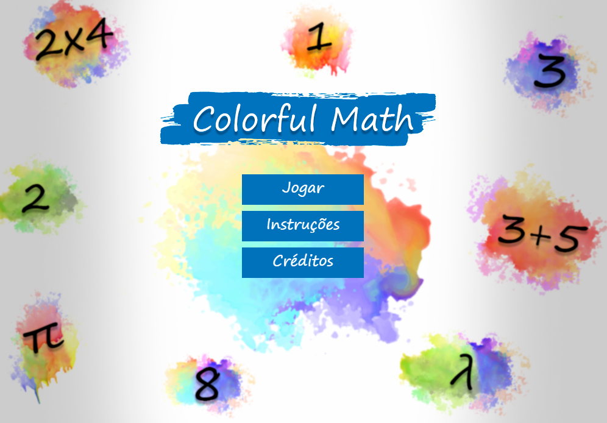
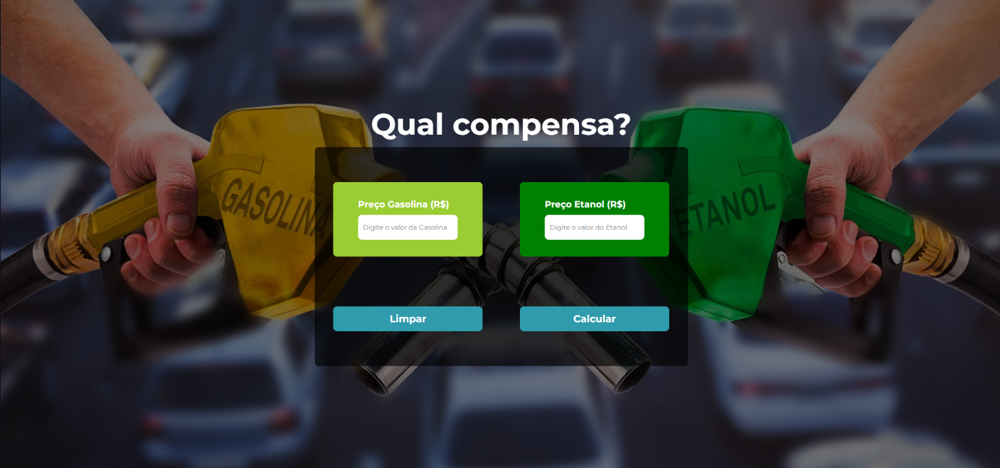
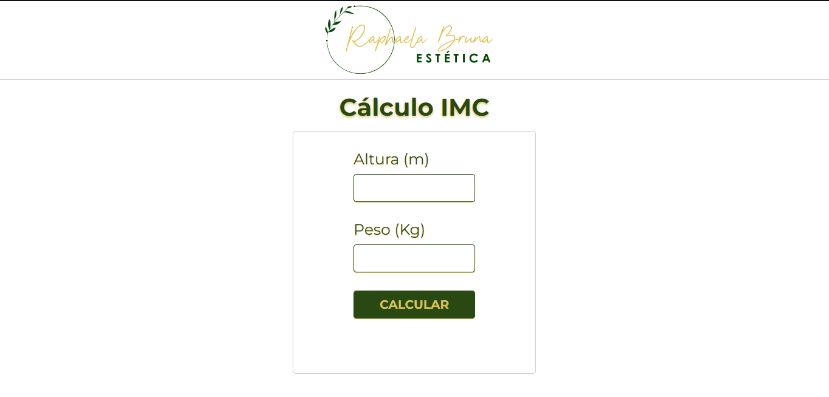
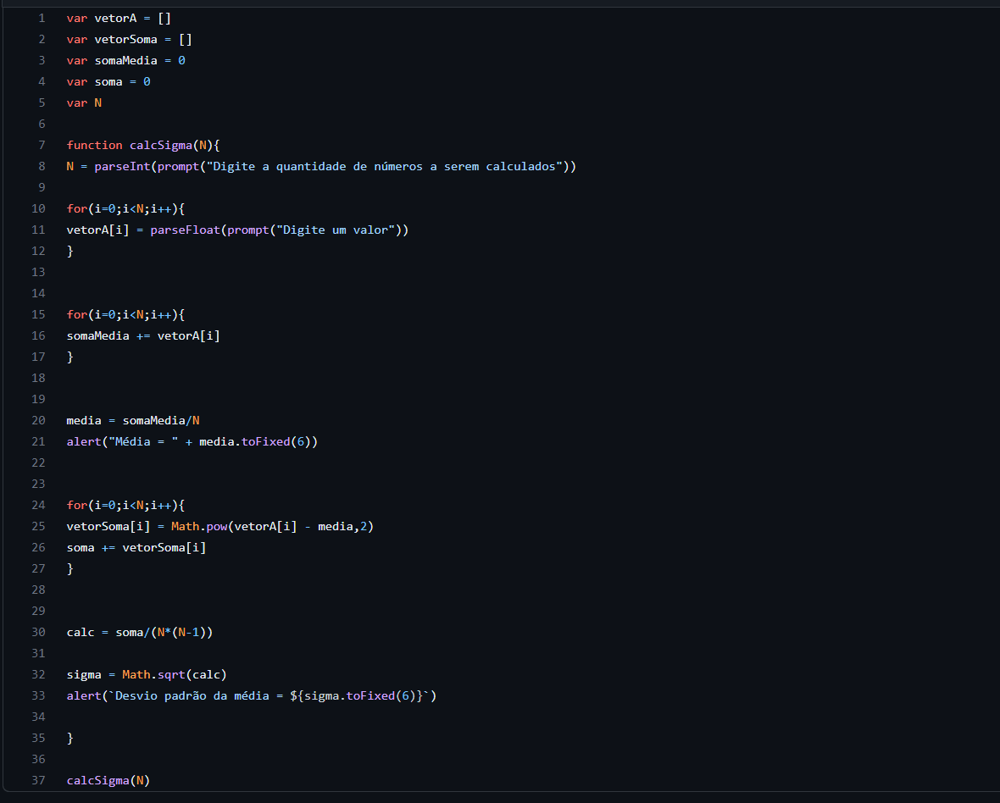

RV Slva.
Perfil do jogador
Skills
Projetos Pessoais
Contato
Projetos Pessoais
Colorful Math

Jogar Colorful Math
Saiba mais conheçendo o repositório deste projeto
Etanol ou Gasolina? Qual abastecer?

Usar calculadora
Saiba mais conheçendo o repositório deste projeto
Calculadora IMC

Saiba mais conheçendo o repositório deste projeto
Calculadora desvio padrão da média

Saiba mais conheçendo o repositório deste projeto